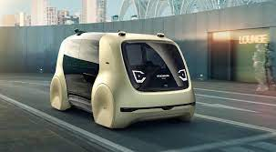

Los autos autónomos, también conocidos como vehículos autónomos o vehículos sin
conductor, son vehículos que pueden operar y desplazarse en carreteras y entornos urbanos sin la
necesidad de intervención humana directa. Estos vehículos utilizan una combinación de tecnologías,
como sensores, cámaras, radares, lidar y sistemas de procesamiento de datos, para percibir su entorno,
tomar decisiones y controlar la dirección, la aceleración y el frenado.
La conducción autónoma se basa en la inteligencia artificial, el aprendizaje automático y los algoritmos sofisticados que permiten al vehículo interpretar y responder a las señales del entorno de manera similar a como lo haría un conductor humano. Estos vehículos autónomos son capaces de reconocer señales de tráfico, detectar obstáculos, mantenerse en el carril, realizar maniobras de adelantamiento y estacionamiento, y
adaptarse a las condiciones del tráfico de forma autónoma.
|
 |
- Sistemas de procesamiento de datos para interpretar la información recopilada.
- Capacidad para tomar decisiones y planificar rutas.
- Sistemas de control para dirigir el vehículo, incluyendo aceleración, frenado y dirección.
- Comunicación con otros vehículos y la infraestructura vial.
|
La función principal de los autos autónomos es proporcionar una conducción automatizada, eliminando la necesidad de la intervención humana directa. Pueden realizar tareas de conducción como mantenerse en el carril, cambiar de carril, frenar y acelerar de manera autónoma. |